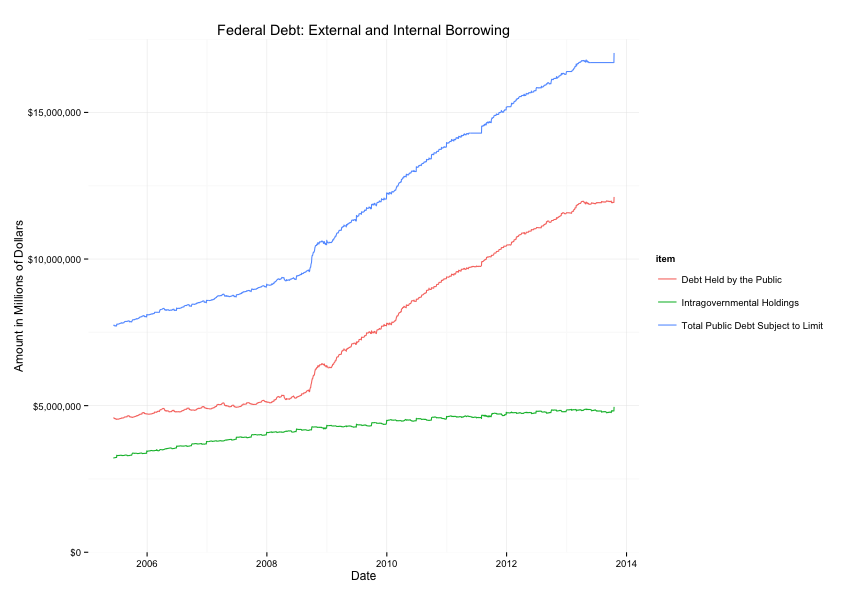
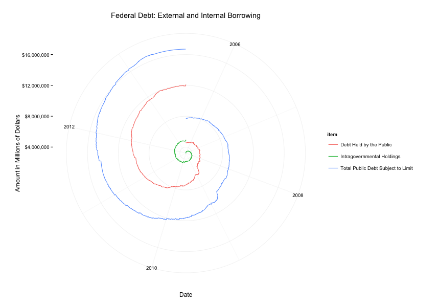

ggplot2
ggplot2 is an R package based on The Grammar of Graphics, a scheme for visualizing quantitative information. Basically, a graph can be thought of as made of several layers, such as the geometric unit (lines, points, etc) or the scale (log versus linear) or the coordinate system (cartesian, polar, etc). One benefit of this modularity is that it allows the user to easily enforce consistency of appearance across different plots, and change an aspect of a plot without changing the others.
US Federal Debt
We try out ggplot2 on data collected from the US Treasury. Here is a line of code for generating a plot:
p <- ggplot(t3sample) +
aes(x = date, y=close_today, group = item, color = item ) +
scale_y_continuous('Amount in Millions of Dollars', labels = dollar) +
scale_x_date('Date') +
coord_cartesian(ylim=c(0,17500000)) +
labs(title='Federal Debt: External and Internal Borrowing') +
theme_minimal() +
geom_line()
In the above statement, we simply add features and attributes to the ggplot( ) object. The resulting graph is:

The US national debt is the sum of the publicly held debt in the form of Treasury bonds and intragovernmental holdings, which include borrowing from the Social Security and Medicare trust funds. We see that the rapid growth in the total debt since the 2008 recession is overwhelmingly due to the publicly held debt.
Let's see what happens if we replace coord_cartesian(ylim=c(0,17500000)) with coord_polar():

The graph is now in polar coordinates, but due to the modularity of ggplot, the look and feel of it remain unchanged. From this, we see that the national debt is spiraling out of control.